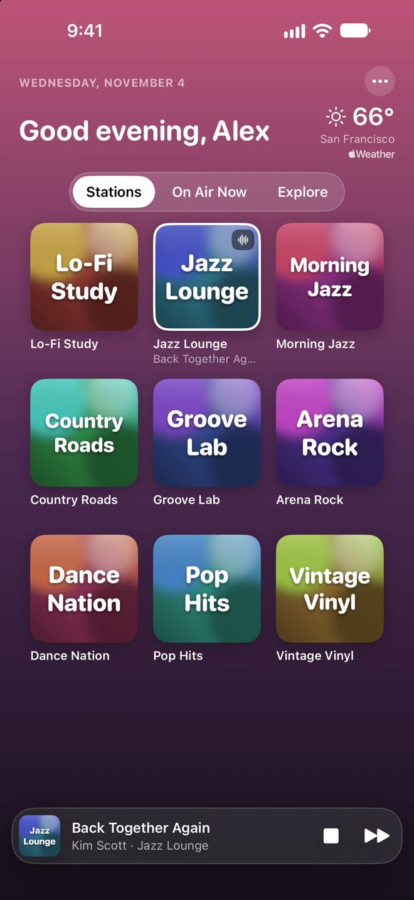
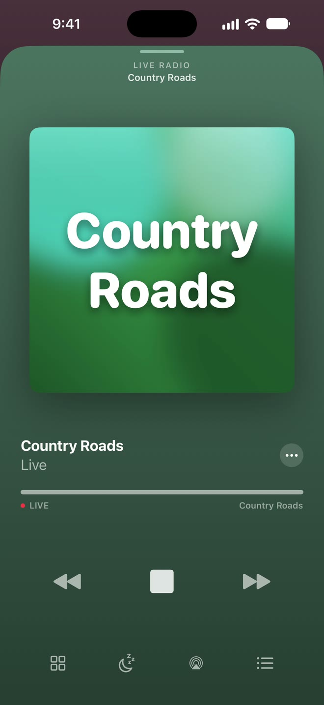
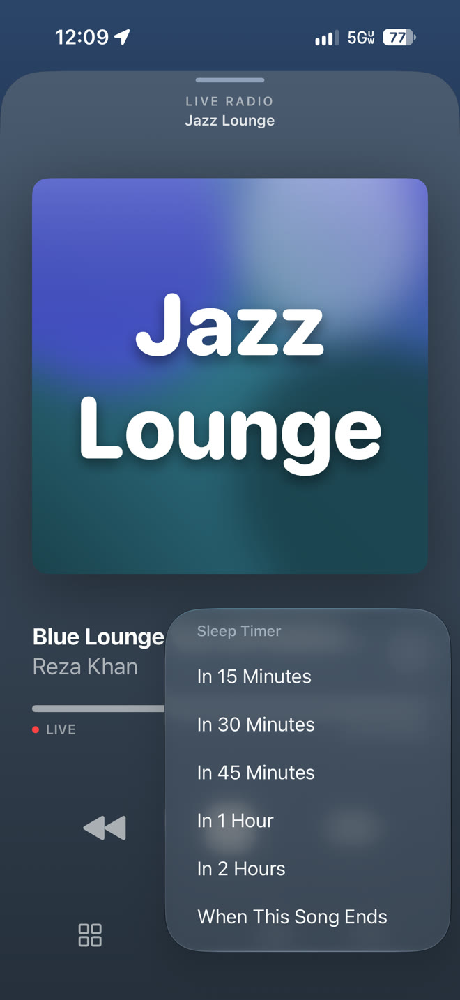
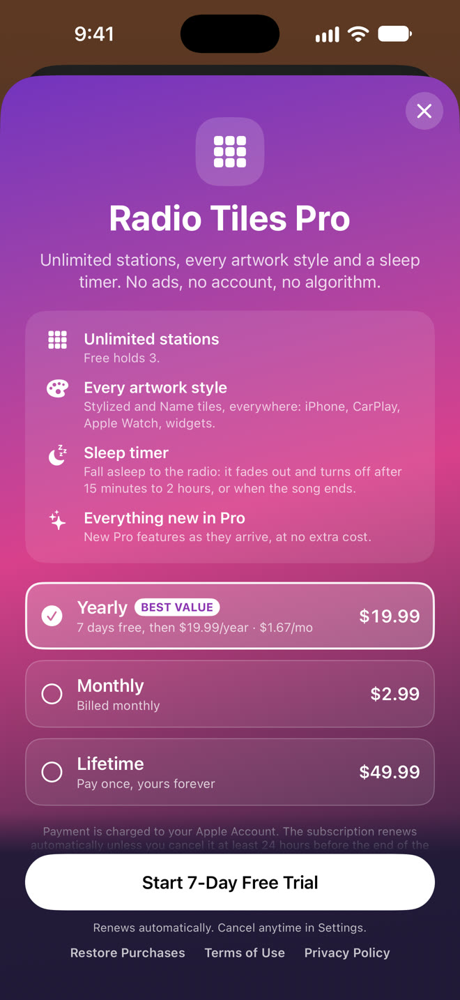
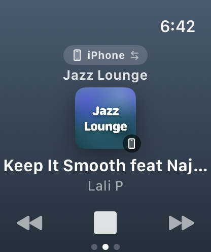
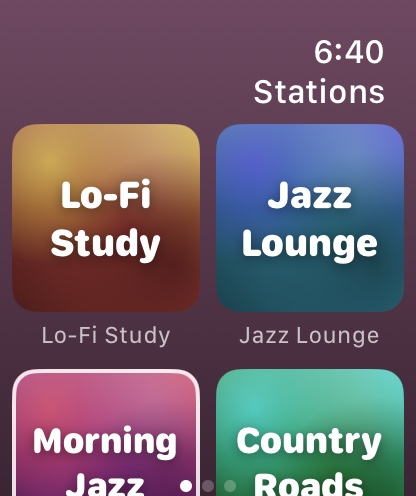
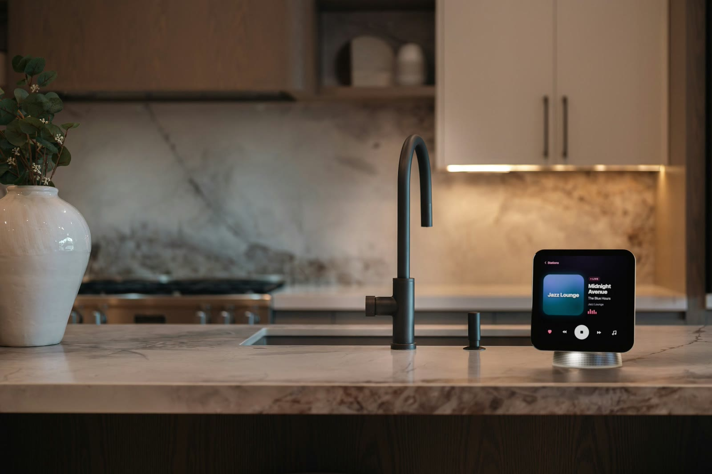
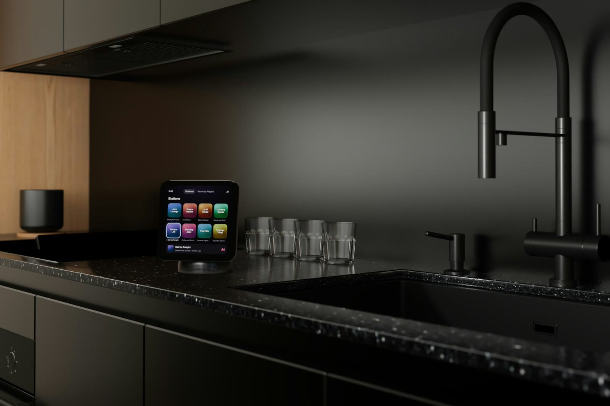
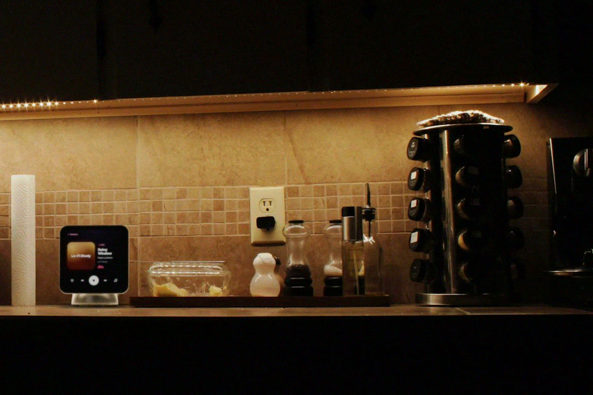

How it works.
Four taps from opening the app to falling asleep to the radio.




Live radio for iPhone, CarPlay & Apple Watch
Thousands of live stations as big, beautiful tiles. One tap and you're on air, at home, in the car or on your wrist.

Pick a country, then tap a tile to tune in. Tap it again to stop. Sound on.
Tap a tile to tune in
Four taps from opening the app to falling asleep to the radio.




No feeds, no recommendations, no sign-up. Just your stations, beautifully laid out, ready when you are.
Pick your stations and Radio Tiles turns them into a wall of color. Tap a tile and you're live. While it plays, the song title shows right under the tile.
Big, easy tiles on your car's screen and nothing to fiddle with. Get in, and the radio is already on.
Your stations sync to Apple Watch on their own. Play, stop and switch without reaching for your phone.

Search the open Radio Browser directory of stations from all over the world, by name, country or genre. Stations from your country come first. Got a stream link? Paste it in.
Apple HomeView puts a bright square screen and a room-filling speaker on your kitchen counter. Radio Tiles is ready for it from day one: your tiles come over from your iPhone, so anyone at home can tap a station and fill the room with live radio.



HomeView plays CarPlay audio apps straight from your iPhone, and Radio Tiles is one. Nothing extra to install.
Big, bright tiles and the song in large type. Anyone at home can switch the station without picking up a phone.
Prefer AirPlay? Send the radio from the player to HomeView and HomePod together, in sync, all over the house.
Apple HomeView arrives November 13, 2026. Apps from iPhone need a paired, compatible iPhone nearby. Images are renderings of HomeView placed in real kitchen photos.
Your stations on the Home Screen and Lock Screen. One tap starts the music.
"Play Jazz Lounge in Radio Tiles." Works hands-free, in the car too.
Every song you heard, with Top of the Week across all your stations.
Loved a song? Play it in Apple Music or add it to your library in a tap.
A friendly greeting and the local weather every time you open the app.
No account, no ads, no analytics. Your stations stay on your devices.
The free version is the full app, CarPlay and Apple Watch included. Pro is for when three stations aren't enough.
$0 forever
Unlimited stations, every artwork style and the sleep timer
Prices in US dollars. The App Store shows the price in your currency. Subscriptions renew automatically unless cancelled at least 24 hours before the period ends.
Yes. The free version holds up to 3 stations and includes CarPlay, Apple Watch, widgets, Siri and the weather. No ads, ever. Pro unlocks unlimited stations, every artwork style and the sleep timer.
No. There's no sign-up and nothing to log into. Open the app, add a station, press play.
From the open Radio Browser directory, a community list of public internet radio streams, or from any stream link you paste in. Radio Tiles plays each station's own public stream and isn't affiliated with any broadcaster.
Yes. Radio Tiles walks you through a one-minute Shortcuts setup, and from then on the radio starts as soon as your iPhone connects to CarPlay or your car's Bluetooth.
Yes, from day one. HomeView plays CarPlay audio apps from your paired iPhone, and Radio Tiles is one, so your stations show up on HomeView with nothing extra to install. Your iPhone needs to be nearby. You can also AirPlay the radio to HomeView right from the player.
Nothing, because we don't collect it. Read the privacy policy for the details.
With CarPlay and Apple Watch, from day one. Questions or ideas? Write to support@radiotiles.com.
Music: “House – July” by Easy_Eva, via Pixabay. Nothing plays until you press play.